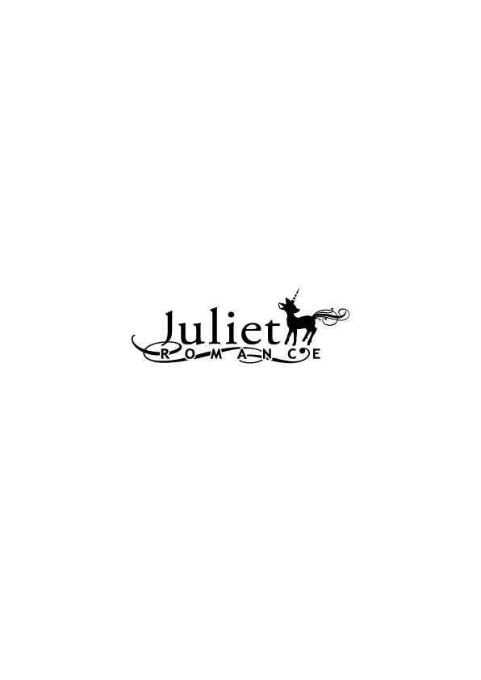

| アイはここにいます (ジュリエットロマンス) | |
| 冬野まゆ | |
| 株式会社パブリッシングリンク (2017) | |

アイはここにいます
冬野まゆ
高村智也は二つの「アイ」について悩んでいた。
一人暮らしをしている１ＤＫのキッチンスペースに立つ智也は、金属の皿に新商品のキャットフードを盛ると、振り返り隣の部屋を見た。
「アイっ」
短くそう呼ぶと、部屋の奥から「ミャオッ」という短い鳴き声がして、智也を悩ませている一つ目の「アイ」が姿を見せた。
──今日こそは......。
機嫌の良さそうな足取りに、智也は、そう期待してしまう。
アイと呼ばれたキジトラの猫は、餌の皿を見付けると、警戒するように姿勢を低くして皿に近づき鼻をヒクヒクさせた。
鼻の動きに合わせて、髭が小刻みに揺れる。
その動きを見守っていた智也は、不満げに前足で砂をかくアイのジェスチャーに肩を落とした。
「これも駄目か？」
ため息を吐く智也の足に、アイは申し訳なさそうに体を擦りつける。
頼むから食べてくれよ。そう祈るような思いでアイの前にしゃがみ込み、小さな頭を包み込むように撫でた。
「お前が痩せ細って病気にでもなったら、野宮さんも悲しむんだぞ」
アイは、もともと智也の職場の先輩の飼い猫だった。
その先輩、野宮が転勤することになり、転勤先の諸事情で飼えなくなったアイを、仕事と一緒に智也が引き継ぐ形になった......というよりは、押し付けられたというのが正しいのかもしれない。
アイを引き取って欲しいと頼まれたとき、智也は、一人暮らしで生き物の世話をする自信がないと断った。
そんな智也に、野宮は、先輩命令から泣き脅しまで色々な手法で説得を試みた。
それでも頑なに断り続けると、最終的には、引っ越しの朝にアイを智也の部屋まで連れて来て置いていく、といった強硬手段を取った。
そんな始まり方だったけれど、いざ飼いだすとペットのいる暮らしも悪くない。というかむしろ、智也にとって、アイはもう大事な同居人になり始めていた。
──ただ問題は......。
智也は、餌が入ったままになっている皿を見やった。
飼いだして十日、アイがちっとも餌を食べないのだ。
アイを飼い始めてすぐに、食欲がないことに気付いた。慌てて動物病院に連れて行くと、環境が変わったストレスで、味覚が変わったり、食欲が落ちたりすることがあるので様子を見てくださいとのことだった。
最初は野宮が与えていたものと同じ餌を与えてみたけれど、アイが食べようとしないので、色々な種類の餌をあげて様子を見ている。しかし、アイが餌を食べる気配はない。
「なぁ～～う」
寝室兼リビングとして使っている部屋に戻ると、アイは、窓のサッシを前足で掻いてみせた。そして甘えた視線を智也に向ける。
散歩に行きたいときの、意思表示だ。
散歩好きなアイを、住み慣れた東京から引っ越しさせることを躊躇ったのも、野宮が、アイを智也に任せた理由の一つだ。
お互い会社が社員寮代わりに借り上げているアパートに住んでいて、それぞれの部屋が歩いていける距離にある。だから、アイの散歩コースの範疇だと判断したのだ。
「お前が気に入りそうな餌、探しとくよ」
窓を少し開け、散歩に出かけるアイの後ろ姿を見送る智也は、キッチンにビールを取りに行きながら、もう一つの「アイ」について考えていた。
智也を悩ますもう一つの「アイ」。
新入社員の相 川 愛 美 が、智也のいる営業部に配属されてちょうど一週間になる。
野宮の穴を埋める形で配属された愛美は、研修を終えたばかりの新人で、当然だが営業の経験が全くなかった。
そのため営業部の中では一番年が近い二十七歳の智也が、愛美の指導係に任命された。
「............どうせオレはチビだよ」
テレビの前に腰をおろし、ビールの缶を開けた智也は、愛美と初めて会った日のことを思い出し、苦々しく呟いた。
配属初日、愛美はグレーのタイトスカートのスーツ姿で深々と頭をさげた。
「一生懸命頑張りますので、よろしくお願いしまうっ」
──ん？ お願いしまう？ お願いします。だよな？
「これからよろしく」
絶対、今噛んだな......。心の中でクスリと笑う智也は、見るからに緊張している愛美を観察した。
明るすぎない程度に染め、軽くウエーブのかかった髪。まだ学生の幼さが残るふっくらして赤味のさす頬と、二重の大きな瞳。こざっぱりして野暮ったくないスーツ。
──営業には悪くないパッケージだ。
智也は、愛美をそう評価した。
〝営業的には悪くないパッケージ〟という言葉は、野宮が智也に最初にかけてくれた言葉だった。
身長１６３センチで童顔な智也は、大学時代、好きだった子に「可愛いけど、弟みたいで恋人にはちょっと......」と、半笑いでフラれた過去があり、自分の容姿に大きなコンプレックスを持っていた。
だから人と接することの多い営業に回され戸惑っていたのだが、野宮は、その容姿が営業向きだと絶賛してくれた。
業務用印刷機や家庭向けプリンターを製造販売している智也の会社では、営業がテレビＣＭやパンフレットだけでは伝えきれない自社製品の良さを、どれだけ販売店や顧客に伝えられるかが重要になってくる。
野宮いわく。
開発部の人間がどれだけいい商品を作っても、営業がその良さをアピールできなければ商品は売れない。各社の性能に大きな差がない商品の場合、この人が薦める商品を買いたいと思わせるのが営業の腕の見せ所。
そのためには営業は、自社の商品に関する知識を、しっかり頭に叩き込んでおくのは当然のこと。
それに加えて、相手に「こいつの話を聞いてやってもいいな」と思わせるパッケージが大事だと野宮は語った。
そういった感想を初対面の相手に抱かせることが出来るのは、一種の才能で、智也はその才能の持ち主だと評してくれた。
少なくとも智也の目から見た愛美は、ゆっくりと話を聞きたいと思わせる雰囲気がある。
ただ会って間もない愛美にその言葉をストレートに投げかければ、セクハラと思われかねないので、その評価は智也の心の中に留めておいた。
──それよりも......。
と、智也は愛美の足元に視線を走らせた。
愛美はスーツによく似合うヒールの高いパンプスを履いている。
デスクワーク中心の仕事なら問題はないが、外回りの多い営業職でヒールの高いパンプスを履くのは足に負担がかかる。
「そのヒールだと......」
教育係として助言しておいた方がいいだろうと、智也が口を開くと、愛美は弾かれたように目を見開き深々と頭をさげた。
そして、智也が続きを言うよりも先にこう叫んだ。
「すみません。先輩より視線が高いって失礼ですよね」
よく通る愛美の声がフロアに響くと、周囲の視線が二人に集中した。
その視線を感じながら、智也は、初めてお互いの身長差を意識した。
愛美の身長は、たぶん１６０センチ弱。裸足で並べばかろうじて智也の方が高いが、愛美がヒールの高いパンプスを履いた状態では......。
クスクスと押し殺す笑い声が周囲から聞こえる。
野宮と同期で、良くも悪くも遠慮がなく姉御肌の性格をしている戸田ユミにいたっては、腹を抱えて笑っている。
自分を取り囲む笑い声に感情的になった智也は、思わず怒鳴っていた。
「謝るくらいなら、一生そのパンプスを履いていろっ！」
「怒鳴ったのは、まずかったよな......」
配属初日のことを思い出し、ビールを飲む智也は唸った。
突然コンプレックスを刺激され、周囲に笑われたからといって、感情にまかせて怒鳴ってしまったことは反省している。
「反省はしているけど、だからってあの態度はないだろう......」
怒鳴りつけてしまったせいか、一緒に外回りをすると愛美は、なるべく智也の視界に入らないよう遠慮がちについてくる。話しかけても、脅えた様子で短く返事を返してくるだけだ。
しかもいつもは背後霊のごとく気配を押し殺してついてくるのに、下りの階段に差し掛かると、智也の脇をすり抜け一目散に階段を駆け下りてしまうのだから気まずいことこの上ない。
こんな状態で今さら「そのヒールだと足を痛めるから、もっと踵の低いものに変えた方がいいよ」と言っても、ただの負け惜しみにしか聞こえないだろう。
さらに身長も心の器も小さい先輩のパワハラ発言と、思われかねない。
新人指導は七月初旬まで続く。二カ月もこの状態は辛い。
「本当はもっと仲良く仕事したいんだけどな......」
アイが出て行った窓の隙間から入ってくる五月の風を感じながら、智也はビールの缶を傾けた。
＊＊＊＊
「あずきちゃん、なんでこうなったんやろ......」
引っ越してきたばかりのアパートで、愛美はうずくまり、ご飯を食べる猫の背中を撫でた。
あずきちゃん。そう呼ばれた猫は、愛美の唸り声を気にする様子もなく美味しそうに食事を続ける。
「うち、本気で後悔してるん......」
無反応なあずきの態度を気にすることなく、愛美は愚痴を続ける。
「ほんまに、やり直せるならやり直したい。そう思うんやけど......」
愛美自身、ここしばらくの出来事のどこまで遡ってやり直せば、今の状態を改善できるのかわからなくなっている。
最初のつまずきは新人研修のときだった。と、嬉しそうにご飯を食べるあずきを眺めながら思い返す。
新人研修は入社直後からゴールデンウィークまで研修所に泊まり込みで行われた。研修初日から、愛美は同期の子たちに「もんぺちゃん」とあだ名を付けられ、いじられまくられた。
理由は単純で、丈のあわないパンツスーツにダサダサのローファーを履き故郷の訛りを隠さずに話す愛美のキャラクターが面白かったからだ。
同期の子たちが、陰湿ないじめとしてではなく、親しみを込めて「もんぺちゃん」と呼んでいたのはわかっていたけれど、それでもそのあだ名は恥ずかしかった。
一カ月弱の研修期間が終わり、各々の配属先が決まったとき、そこでは「もんぺちゃん」なんて田舎者丸出しのあだ名を付けられないよう気を付けようと心に誓った。
だから配属初日は、真新しいスーツとヒールの高いパンプスで挑んだ。
そして教育係の高村智也を前にしたとき、まずは綺麗な標準語の発音で挨拶を......と、意気込みすぎて、
「一生懸命頑張りますので、よろしくお願いしまうっ」
と、噛んでしまった。
──しまった笑われる！
──もんぺちゃん再来や！
そんな愛美の焦りに気付くことなく、目の前の智也は素早く愛美の全身に視線を走らせる。
──あかん。田舎者かどうか値踏みされとる。
名誉挽回のために何か気の利いたことを言わなくては......と焦る愛美は、ふと目の前に立つ智也の目線がわずかだが自分より低いことに気付いた。
きっと自分がこんなにヒールの高いパンプスを履いていなければ、相手の方が目線は高いはず。
そのことに気付いた愛美は、ヒールの高いパンプスで先輩を見下ろしている自分は、社会人として正しいのか不安になってきた。
そんな愛美の心を見透かしたように、智也が「そのヒールだと......」と、口を開いたので、愛美は素早く頭をさげ謝罪した。
「すみません。先輩より視線が高いって失礼ですよね」
ミスをしたときは、非を認めすぐに謝るのが社会人としてのあるべき姿。と、教えられたとおりに謝罪したのに、周囲から笑いが沸き起こり、顔をあげてみれば、先輩は確実に怒っていた。
「なぅ」
ご飯を食べ終えたあずきが、猫なで声で愛美を見上げる。
さっきまで愛美の愚痴を無視していたのに、満腹になった途端にこの態度。
──そこが可愛いんだけどね。
と、あずきを抱き上げ、小豆色の首輪の隙間に指を滑り込ませた。
首筋を撫でると、首輪に付けられているアルファベットの「Ａ」の形をした金属のチャームが揺れてチャリチャリと鈴のような音を立てる。
その音を楽しむように指を動かす愛美は、再び唸る。
「どうしたらええんやろ」
やり直せるのなら、新人研修初日からやり直したい。
というか、小さい頃に戻って、早とちりで先走った行動を取ってしまう性格をなんとかしたい。
──ちょっと冷静になって考えればわかる。
──先輩に、公衆の面前であんな謝り方をしたらアカン。
智也を見下ろさないよう、次の日から、こっそり低いヒールに履き替えればよかっただけなのに「一生そのヒールを履いていろっ！」と、怒鳴られた今、どうすればいいのかわからない......。
「先輩、うちのことを、上から目線の嫌な奴やって、思っとるんやろな......」
今更ながらのせめてもの気遣いとして、同行するときには、なるべく智也の視界に入らないように努めている。だけど自分に向けられる智也の冷ややかな視線が和らぐ気配がないので、自分はよほど嫌われてしまっているのだろう。
あの日智也が言わんとした言葉の意味を正しく理解することなく、愛美は早とちりな後悔を続ける。
「ちゃんと謝った方がええんかしれんけど、下手に訛って笑われたら嫌やし......」
唸り続ける愛美の腕の中で、あずきは満足げに喉を鳴らしていた。
＊＊＊＊
その日、仕事を終えアパートに帰ってきた智也は、真っ先にアイのトイレに向かった。
営業先で、最近子供が生まれて親バカ街道まっしぐらのお客さんと世間話をしていて、ある疑問を感じたのだった。
小さな子供の成長なんて、独身の智也があまり興味を持てる話ではなかったが、これも仕事のうちと話を聞いていると、相手は子供が離乳食を始めてからウンチが硬くなったと話した。
その話を聞いて、ふと思ったのだった。
「やっぱり......」
智也はそう呟き、猫用トイレの中から砂で固まっている排泄物を、備え付けのスコップですくい上げた。
餌を食べないことにばかり気を取られていたけれど、よく考えれば、自分はマメにアイのトイレの始末をしている。もちろん固形の排泄物の処理もしている。
「アイ......」
智也は、アイの両脇の下に手を入れ、高く抱き上げてみた。
だらりと後ろ足を垂らすアイは、毛艶が良く、痩せていく気配もない。
アイを引き取って半月、ずっと餌を食べていないのに......。
そう首を傾げながら、痩せ具合を確認するために首輪の隙間に指を入れてみた。
野宮が飼っていた時代から着けているワインレッドの首輪には、アルファベットの「Ａ」の形をした飾りが着いていて、智也の指の動きに合わせてチャリチャリと金属音を立てる。
「お前、どっかで餌をもらっているのか？」
そう問いかけてみても、アイはなぜか得意げに目を細めているだけだった。
＊＊＊＊
「なにこれ！」
夜、愛美は、叫び声をアパートの自室に響かせた。
いつものように玄関で鳴くあずきを招き入れて、ご飯をあげていたとき、あずきの首輪に細く折りたたまれた紙が結びつけられていることに気付いた。
紙を解いてみると、こう書かれていた。
『どなたか餌をあげていますか？』
「あずきちゃん......あんた、前の住人に捨てられた野良猫と違ったん？ うちの他に飼い主おったん？」
悲鳴にも近い声を出す愛美は、あずきとの出会いを回想する。
愛美の勤める会社では、社員寮代わりに、会社の最寄り駅周辺のアパートの部屋数か所と長期賃貸契約を結んでいる。社員は、家賃の半額を負担することで敷金礼金ナシで住むことができる。
愛美が暮らしている部屋も、会社が賃貸契約を結んでいるアパートの一つで、彼女が暮らす以前の住人も当然同じ会社の人だ。
──あの日、あずきちゃんは私を出迎えてくれたはずやのに。
引っ越しの朝、憧れていたはずの東京暮らしが不安になってきていた愛美を、あずきがこの部屋の前で出迎えてくれた。
愛美と目が合うなり甘えた鳴き声をあげてお腹を見せるキジトラの猫は、「Ａ」のチャームが付いた首輪をしていたので、最初は飼い猫だと思った。だけど隣の部屋の住人が、愛美の前の住人が飼っていた猫だと思うと教えてくれた。
隣の住人は同じ会社の人ではないので、前住人に関して詳しいことは知らなかった。
しかし詳しいことはわからなくても、ペットを置き去りにした前住人に愛美は憤りを感じた。それと同時に、自分がこの猫の飼い主になってあげなければ、と思った。
首についている「Ａ」のチャームと小豆色の首輪と小豆の粒のような肉球から、この猫の名前は「あずき」に間違いないと思い込んだ愛美は、毎日ふらりと現れてご飯の催促をする猫を「あずきちゃん」と呼び可愛がっていた。
あずきを自分の飼い猫と信じて半月が経った今頃になって、こんな手紙を付けてくるなんて......。
「あずきちゃん......あんた、この部屋の前の住人が捨ててった猫とちゃうの？」
愛美は、食事を終えたあずきの両脇の下に手を入れ、目の高さまで抱き上げると、その匂いを嗅いでみた。
あずきは、毎日外から帰ってくるのに体が汚れていない。
猫を飼うのは初めてなのでよくわかっていなかったけれど、あずきを飼いだして約半月、一度もお風呂に入れていないのに常に清潔でシャンプーの匂いがするのは、おかしなことなのかもしれない。
「あんた......よその子なん？」
そう問いかけてみても、あずきは満足げに舌なめずりするだけだった。
隣の住人は似ていると言っただけで、あずきが前の住人の飼い猫だったと断言はしていない。
ということは......自分は、よその飼い猫に勝手に餌をあげていたことになってしまうのだろうか？
「これって、犯罪なんやろか？」
東京は簡単なことでご近所トラブルが起きて、裁判沙汰も多いから行動には気をつけるようにと、東京で働くことに反対していた両親に散々言われていたことを思い出した。
訴えられるのでは......と不安になった愛美は、あずきを床に降ろしてメモ用紙に、
『ごめんなさい。訴えないでください』
と書き、細く折りたたむと、あずきの首輪に結びつけた。
──どうか何も起こりませんように。
出て行くあずきの後ろ姿に手を合わせて見送った翌日、あずきが来たときにその首輪に、
『訴えたりしません（笑）。この子が気に入る餌の銘柄を知りたいだけです』
と、書かれた手紙が結びつけられていたのでホッと胸を撫で下ろした。
返信に、いつもあげているキャットフードの銘柄を書いた。そして、できれば、これからも自分がこの子にご飯をあげたいとお願いしてみた。
すると今度は相手から、あげるのは構わないが、食べ過ぎないように、あげたご飯の量を教えて欲しいと返された。
その日からあずきの健康のために、毎日与えたご飯の量を書き、首輪に結びつけるようにした。そのついでに、日常の些細なことを書き添えると、その都度、姿の見えないあずきのもう一人の飼い主は返事を返してくれた。
それは一人暮らしを始めたばかりの愛美にとって、ささやかな日常の楽しみになっていた。
＊＊＊＊
アイを飼いだして一カ月が過ぎ、アイに餌をあげてくれている人との手紙のやりとりは、智也の日課になり始めていた。
『仕事の帰り道、木に留まっているたくさんの鳥の鳴き声に驚きました。夜に鳴く鳥は、フクロウとコウモリだけだと思っていました』
ある日の手紙に、そう書かれていた。
それを読んで、街路樹に留まりネオンの明るさに文句を言いたげに囀るモズの集団を思い出した。自分だって東京に出てきてすぐの頃は、同じ思いであの街路樹を見上げていたのに、いつの間にか気にしなくなっていた。
そんなことに気付くのと同時に、コウモリは鳥ではなく哺乳類のはず。それ以前に手紙の主は、コウモリの超音波が聞き取れるのだろうかと笑ってしまった。
だからアイの首輪に、今日シャンプーしたことと、コウモリは哺乳類だということを書き記しておいた。
すると次に帰ってきたアイの首輪には、
『ネットで確認しました（一瞬疑いましたごめんなさい）。衝撃の事実でした。
私がコウモリの卵だと思っていたアレは、なんだったんでしょうね？』
と、書かれていた。
「アレって、なんだよ？ オレがなんのことか知りたいよ」
思わず、手紙にツッコミを入れてしまった。
そんな手紙のやりとりが続くと、アイに餌をあげてくれている人に妙な親しみを感じるようになっていた。
名前は書いていないが、丸っこい文字や手紙の雰囲気から察するところ、東京の暮らしに慣れていない若い女の子のように思える。
勇気を出して食事に誘ってみようかとも思うけれど、軽いナンパ野郎だと思われるのが嫌でなかなか実行に移せない。
それに自分も名前を書いたことがないから、もしかしたら相手は智也のことを女性だと思っているかもしれない。もちろん、相手が男かもしれないという可能性も捨てきれない。
万が一、奇跡的な確率で、相手が想像どおりの若い女の子で智也に好感を持ってくれていたとしても、実際に会った智也がチビで童顔な男だと知れば幻滅されてしまうかもしれない。
大学時代のトラウマが疼いた。勝負に出て失敗して、心癒される手紙のやりとりさえなくなってしまうくらいならこのままでいいと思ってしまう。
自分の器の小ささに苦笑いしながら開いたある日の手紙には、こう書かれていた。
『東京の人は、早足ですね。電車もバスも、もし乗り過ごしてもすぐに次が来るのに、どうしてそんなに急ぐのかな？ 会社の先輩と歩くと、追いつくのが大変です』
その言葉に、普段の自分はどうだろうと振り返ってみた。
早く移動することが仕事のできる証しだと言わんばかりに早足で歩いていて、愛美の歩調なんて気にしたこともなかった。
無口な愛美が不満を言ったことはないが、もしかしたら愛美も同じようなことを思っているのかもしれない。
一緒に外回りをする日々も、あと一カ月も残っていない。関係を改善することはできないかもしれないが、明日からは、もう少し愛美の歩調を意識して歩いてみよう。
そんな些細なことを気付かせてくれる手紙の送り主に、智也は、改めて親近感を感じていた。
それと同時に、手紙の送り主の会社の先輩も、もう少し後輩のペースを考える心の余裕を持って欲しいと願った。
＊＊＊＊
「あいちゃん、なにかいいことあった？」
午前中の外回りを終え、智也と一緒に会社に戻った愛美に、先輩の戸田ユミが声をかけた。
愛美の傍らに立つ智也が「あいちゃん？」と、露骨に嫌そうな声を出した。
「相川だから『あいちゃん』、名前に『愛』って漢字も入っているし。女子社員は、みんなそう呼んでいるわよ。なに？ 高村も『あいちゃん』て呼びたいの？」
ユミのからかうような口調に、智也は「冗談じゃない」と、心底嫌そうに顔をしかめた。
そんな智也の前で「自分もやっと東京の生活に馴染んできたらしく、今日はいつもより高村先輩の歩く速度を遅く感じたことが嬉しい」とは言いにくい。
「なんでもないです。そうだ、ミツモトの一条さんから確認して欲しいと言われたんですけど......」
話題を変えるついでに、午前中の訪問先で預かった伝言を読み上げようと携帯電話を取り出すと、ユミがその手首を掴んだ。
「なにこの子。可愛い～」
はしゃいだ声をあげるユミは、愛美の携帯電話の待ち受け画面を覗き込んでいる。
「う、うちの猫です......」
「あいちゃん、猫飼っているんだ」
「はい」
餌をあげているんだから、自分もあずきの飼い主のはず。
そう認識している愛美はユミの言葉に、大きく頷いた。
「キジトラだぁ。キジトラ流行なのかな？ なんて名前？ 他の写真はないの？」
褒められたのが嬉しくて、フォルダーいっぱいに溜まっているあずきの写真を披露しようとした愛美は、智也の冷たい視線に気付いてその手を止めた。
眉間に皺を寄せてこちらを睨む智也の眼差しは、言葉こそないが「無駄話しないで仕事しろ！」と、言っているようにみえる。
「写真はお昼休みにでも......」
そう画面をメモ機能に切り替えると、智也が離れていった。
怒られなくてよかった。ホッとした愛美は、あずきの写真を見せられなかったことを残念に思いながら伝言を読み上げた。
＊＊＊＊
一度帰社して、午後から再び外回りに出かけた智也は、背後を歩く愛美に話しかけるべきか悩んでいた。
さっき会社に戻ったとき、愛美の携帯電話の待ち受け画面がチラリと見えた。
なんだかアイに似ている猫が......と思い、写真をもっとよく見ようと目を凝らしていたら、愛美に露骨に嫌そうな顔をされてしまった。
まあアイは、どこにでもいるようなキジトラ柄の雑種の猫なのだから、愛美が偶然同じ柄の猫を飼っていても不思議はない。
それならそれで「偶然だけどオレも、キジトラの猫を飼っていて......」なんて、話しかければ、今より愛美との距離が縮まるんじゃないかと考えた。
だけど......と、智也は、さっき自分に視線を走らせて携帯電話の画面を変えた愛美の姿を思い出す。
──あれはやっぱり、オレにプライベートに立ち入って欲しくないという意思表示なのだろうか......。
それにもし......と、自分の中で最悪な状況を思い浮かべかけた智也は、さっきまで自分のすぐ後ろを歩いていたはずの愛美の姿が消えていることに気付いた。
「あれ......おいっ」
驚いて振り向くと、愛美は、智也からかなり離れた後方に立ち尽くしていた。
人混みで智也の背中を見失ったのかと思い、大きく手を振ってみせたけれど、愛美が駆け寄ってくる気配はない。
もじもじしながら智也を見ているだけだった。
「なにやってんだ？」
しょうがない。と、智也は愛美に駆け寄った。
「急がないと、先方との約束の時間に遅刻するぞ」
「すみません......でも......あの......」
頬を赤くする愛美は、なにか言いたげに視線を落とした。
その視線を追いかけ、愛美の足元を見ると、左足の踵が宙に浮いていた。
「ん？............」
一瞬、この忙しいのになにを遊んでいるんだと怒りかけた智也は、愛美の左のパンプスが低く沈み込んでいることに気付いた。
よく見れば、側溝を覆うコンクリート製の蓋の穴に、愛美の左のヒール部分が深くはまり込んでいる。
「ちょっと片足で頑張って」
しゃがみ込んでパンプスを引っ張ってみたけれど、よほどしっかりはまり込んでいるらしく、智也の力でもびくともしなかった。
「ごめんなさい......」
俯く愛美の足元にポツリと水滴が落ちた。
梅雨入りはしているけれど今年は空梅雨で、朝から日差しが熱い。
だから一瞬、汗かと思ったのだが、チラリと見上げた愛美が唇を噛みしめていることに気付いた。
──ああ......。
水滴の意味を理解した智也は、再び愛美の足元を見た。
堪えきれなくてポツリポツリと降ってくる水滴に、今度は智也が唇を噛んだ。
愛美の涙にではなく、ストッキングの内側から透けて見える足首の絆創膏に。
大きめの絆創膏には薄ら血が滲んでいる。踵部分で擦れて傷になり、常に当たっているから治る暇もなく完治しないのだとすぐにわかった。
足に合わないなら、靴を替えればいい。だけど愛美には、替えられない理由があったのだ。
──謝るくらいなら、一生そのパンプスを履いていろっ！
配属初日、感情にまかせて投げつけた自分の言葉が悔やまれたが、唇を噛むしかない。
「......めん」
「え？」
素直に謝罪の言葉を口にできない智也は、愛美を見上げて「幾つ？」と、問いかけた。
「まだ二十二です」
まだ......？ と、愛美の回答に首を傾げる智也は、愛美が続けて「というか、二十二にもなってすみません」と言うので、年齢のことだと気付いた。
「いや違う......足だよ」
「二本です」
「だから......」
そうじゃなくてっ！ と、怒鳴りたい思いを抑えて「靴のサイズだよ」と、付け加えると、愛美はやっと足のサイズを教えてくれた。
「わかった。ちょっとここで待ってて」
そう立ち上がる智也に、愛美は、大きく頷く。
「大丈夫です。高村先輩は、遅刻しないでくださいね」
「は？」
愛美の返答はどうもずれている。
戸惑う智也に、片足で立ちぐらぐら揺れている愛美は「先方を待たせては失礼ですから」と、返した。
カカシのように片足立ちでぐらぐら揺れている愛美は、
「どうせ新人の私なんか、いてもいなくても同じですから。商談が終わるまで、ここで待っています」
と、微笑んだ。
涙混じりの笑顔が、智也に気遣いをさせないためだとわかるから、余計にたまらない。
「お前が正しいよ」
たまらない思いで頷く智也は「とりあえず」と、愛美の足元にもう一度しゃがみ込んだ。
そしてポケットからハンカチを取り出し小さく畳むと、パンプスの中に入れて側溝にはまり込んだヒール分だけ低くなっている踵の高さを右と合わせた。
「足乗せてみて」
「え......でも......」
智也のハンカチを踏みつけることに戸惑いを見せる愛美の足首を掴んで、強引に踵をハンカチの上に乗せた。
ずっと片足で立っていて疲れたのか、一度踵をつけると、愛美は再び足をあげようとはしなかった。
「とりあえず、この方が少しは楽だと思うから」
姿勢を直す智也は、今度は鞄から自分のメモ帳を取り出し、愛美に渡した。
「あの......」
「携帯持っているよな？ じゃあ、携帯耳にあててこのメモ帳読んでいて。それとちょうどいいから、内容をなるべく覚える努力しろよ」
「えっ......あの......」
そう言うと智也は、携帯を取り出した愛美の返答を待たずに走り出した。
走り出す智也は、頭の中でこの周辺の地図を広げながら携帯電話のアドレスを開いた。
＊＊＊＊
──社会人として最低だ。
心の中でそう呟き、愛美は涙を拭った。
突然の事態にパニックになっていたからって、こんなことで泣く自分は最低だと、愛美は唇を噛んだ。
きっと智也は、呆れているだろう。
初日から失態を見せまくっていることを思うと、なおさら恥ずかしさが増していく。
──少しでも名誉挽回しなくちゃ。
そう思う愛美は、指示されたとおりに携帯電話を耳に添えたまま智也のメモ帳を読み始めた。
メモ帳には、取引先や飛び込みで入った会社で使用されているプリンターの機種と、担当者の名前や身体的特徴が書き込まれていた。それぞれの機種名の下には、トナーを交換に行った日付や、それから割り出した取り換え時期の目安も書かれている。
それと同じように、担当者の名前や身体的特徴の下には、趣味や配偶者や子供の有無などが書き込まれている。
「......」
他のページをめくると、新商品のセールスポイントだけではなく、自分が実際に使用した感想や、従来の商品との違いと共通点が書き込まれている。
今まで、営業先ですぐに誰とでも仲良くなって話し込む智也を羨ましいと思うだけで、それ以上のことを見ていなかった自分に気がついた。
人当たりのいい顔立ちに生まれた智也は得している、くらいにしか思っていなかった。
そこまで考えて、愛美は首を横に振る。
知らなかったんじゃなく、自分は、知ろうとしていなかった。
一緒に外回りを始めて一カ月強。自分と一緒にいるときにも智也がこのメモ帳を開くことはあったのに、そこになにが書かれているか、考えたこともなかった。
必要な伝達事項のみを携帯電話のメモ機能に書き込んで、必要なくなれば消去していた自分には、思いつきもしなかった。
自分がどれだけ稚拙だったのか思い知らされる。
「ごめんなさい......」
思わずメモ帳に向かって謝る愛美は、顔をあげて降りそそぐ太陽の眩しさに目を細めた。
──暑いけど、雨じゃなくてよかった。
──雨の中ずっとこうして立っていたら、通りかかった人に変な目で見られるもんね。
そんなことを考えながら通り過ぎる通行人を観察すると、同じ場所に立ち続ける愛美に好奇の視線を向ける人はあまりいなかった。
一瞬不思議に感じたけれど、立ち止って携帯電話で話すサラリーマンが目に留まり、自分が手にしている携帯電話とメモ帳のおかげだとはじめて気付いた。
スーツ姿で顎に携帯電話を挟んでメモ帳を開いている自分の姿は、なにかを確認するために立ち止まって電話をしているように見えているのだろう。
さっき智也がハンカチを使って踵の高さを調節していってくれたから、足元をしっかり見なければ、愛美が立ち止まっている本当の理由には誰も気付くことはない。
とっさの事態に、それだけの配慮をしてから営業先に向かう智也の気配りに、また涙が出そうになった。
せめてもの感謝の証しに、智也が戻ってくるまでにメモ帳に書き込まれていることを一つでも多く頭の中に詰め込まなくては......と、再び視線をメモ帳に戻した愛美は、智也が戻ってきたとしても、どうすればこのヒールが抜けるのだろうかと不安になった。
──最悪の場合、裸足で靴屋さんまで歩かなあかんかな？
そう心の中でため息を吐く愛美は、誰かに名前を呼ばれたような気がして顔をあげた。
「ウソっ！」
人混みの先から、営業先に向かったはずの智也が紙袋をさげて駆けて来るのが見えた。
「待たせた。とりあえずこれで」
苦しそうに肩で息をする智也は、持っていた紙袋を愛美に渡し、額の汗を拭った。
一時間以上は待つ覚悟をしていた智也がすぐに戻ってきたことに驚きながら、愛美は受け取った紙袋の中を確認した。
「あっ......」
「時間がなくて、店員に薦められたのをそのまま買ったから、デザインに文句は言うなよ。あとかさばるから、箱は捨ててもらった」
踵の低い、落ち着いたデザインのパンプスを取り出す愛美に、智也はそう付け加えた。
「え、でも......高村先輩、商談に行ったんじゃ？」
「今から行く。先方には、遅れることを電話しておいた。だから、早く履き替えろ」
そう急かされ、愛美は慌ててパンプスを履き替えた。
踵の低いパンプスに履き替えると、視界が低くなるのと同時に、足の裏全体で地面を踏みしめている安心感が得られる。
「とりあえずこれをどうするかは、帰り道に考えるか」
側溝の穴にはまり込んでいるパンプスに視線を落として智也が呟いた。
はい。と、頷く愛美は、身を屈めて右のパンプスだけを拾い上げ、通行人の邪魔にならないよう植込みの陰に置いた。
そして智也のハンカチと紙袋は、丁寧に折りたたんで鞄の中にしまった。
「じゃあ、急ぐぞ」
歩きだす智也の背中を追いかける愛美は、すぐにいつもとの違いに気付いた。
歩きやすい。
愛美は、さっきまで履いていたデザイン重視のパンプスとの履き心地の違いに、心の中で驚きながら歩調を速めた。
「あ、靴のお金......。後で払いますね。幾らでしたか？」
金額によっては、できれば給料日まで待ってもらえると嬉しいけど。そんなことを内心考える愛美に、智也は「いらない。お前からもらえるわけないだろ」と呟くように言い、こう付け足した。
「お金はいいから、足に合うようだったら、そのまま使って」
「......」
「お前から」を「お前なんかから」と、自分の存在を拒絶する言葉の類義語として受け止めた愛美は、消え入りそうな声で「ごめんなさい」と、呟くのが精いっぱいだった。
泣いた上に取引先との約束の時間に遅刻させてしまい、靴を買いに走らせ、そのお金も払わせてもらえない自分が情けない。
それ以上はなにも言えずに智也の背中を追いかけた。
愛美はアパートに帰ってパンプスを脱いでから、智也が買ってきてくれたパンプスに、中敷きや、踵の保護クッションが着けられていることに気付いた。
時間がないと言いながらも自分の足のことを気遣ってこのパンプスを選んでくれたことを感じると、申し訳ないような、嬉しいような、曖昧な思いが込み上げてきた。
＊＊＊＊
その日アパートに帰ると、智也は、罪悪感に押しつぶされるようにしてベッドに倒れ込んだ。
部屋の照明に手をかざし、男としては華奢な腕を見上げて苦笑いを浮かべた。
「ガキみたいな手だよな......。だから側溝の穴にはまり込んだパンプスも抜けないんだよ」
ヒールがはまり込んだパンプスをその場に残して商談に行った帰り道、その場所に戻ると、通りすがりの誰かが状況を察してパンプスを側溝の穴から外してくれたらしく、街路樹の陰に右足のパンプスと並べて置かれていた。
智也が外そうと努力したときにはびくともしなかったのに、どこかの誰かは、やすやすとそれを外すことができたらしい。
ようするに、ガキみたいな小柄な体型の自分にもっと腕力があれば、約束の時間を遅らせる必要も、代わりに履くものを買いに走る必要も、愛美をあんなところに立たせておく必要もなかったんだ。
そもそも、愛美があのパンプスを履き続けていなければ、あんな事態にはならなかったはずだ。
ようするに、全ての元凶は自分にあったんだ。
それに駆け込んだ靴屋で手にした靴の小ささが、罪悪感に追い打ちをかけた。
愛美はこんなに小さな足で、この一カ月、文句も言わずに自分の歩幅に合わせていたのだと思うと......。
──ごめんなさい。
プライドが邪魔をして言えなかった一言を、愛美は、ためらいなく口にした。
しかも情けないことに、自分は、その言葉になにも返せなかった。
社会人になった自分が五年かけて育てたのは、ちっぽけな体に収まりきらないプライドだけだったんだと、思い知らされた。
社会人になって五年。大人になった気でいたけれど、先輩に怒鳴られて足に合わないパンプスを履き続け、遅刻しないよう自分だけ先に先方に行くように配慮した愛美の方が、よっぽど大人だ。
「アイ、オレどうしたらいいと思う？」
智也は、自分の頬に顔を寄せてきたアイの頭を撫でた。
頭を撫でられたアイは、嬉しそうに喉を鳴らす。
＊＊＊＊
──靴代の代わりに夕食奢ってよ。
智也にそう声をかけられたのは、給料日直後の金曜日のことだった。
せめてものお詫びにと買ってきたハンカチも拒否され、「足に合うようだったら......」と、言ってくれたこともあり、気まずい思いで智也の買ってくれたパンプスを履いていた愛美は、喜んで承諾した。
給料日にそう声をかけてきたということは、自分を拒絶して靴代をいらないと言ってきたのではなく、給料日前の新人の懐具合を気遣ってくれていただけなのかもしれない。
そう解釈した愛美は、智也とのことを思い悩み、姿なきあずきのもう一人の飼い主にまで相談してしまったことが少し恥ずかしくなった。
『突然の相談でごめんなさい。
仕事で大きな失敗をして、先輩に謝りたいのに、謝ることも許してもらえません。
どうすれば、謝ることだけでも許してもらえると思いますか？』
そう書いた手紙にあずきのもう一人の飼い主は、こう返してくれた。
『相手は、あなたが悪いと思っていないんじゃないですか？
だから、あなたに謝られたくないのかもしれませんよ。
自分なら、悪いと思ってない人に謝られると、いたたまれなくなります』
もちろん自分が悪くないわけがない。
そうわかっていても、あずきのもう一人の飼い主の言葉には「もしもの可能性」を想像することができて、救われた気分になった。
「あずきちゃんが来たら、このこと手紙に書かな」
そう呟く愛美は、ついでに「相談に乗ってくれたお礼に食事でも」と書いたらどうなるかな？ と、考えてしまう。
訛りを気にしてあまり話さないようにしているせいで特に親しい友達もいない愛美にとって、あずきのもう一人の飼い主との手紙のやりとりは、唯一心を許せる場所になっていた。
あずきの首輪に預ける手紙には長文が書けず、お互い短い文章になってしまうので、相手の性別や年齢を特定するのは難しい。だけど愛美は、あずきのもう一人の飼い主は男性のような気がしていた。
さらに言えば、あずきを介して短い手紙のやりとりを毎日してくれているということは、相手は一人暮らしで、そんな手紙のやりとりに文句を言う恋人もいないんじゃないかと......。
──アホらしいでやめよ。
愛美は首を横に振って、妄想が加速していくのを止めた。
あずきが移動できる範囲に住んでいて独身の男性で、唯一自分が心を許せる相手。そんな存在に、淡い恋心を感じてしまう自分がいる。
相手だってこれだけマメに手紙を返してくれるということは、多少なりとも自分との手紙のやりとりを楽しみにしてくれているのだと思う。
そんな二人が出会えば、恋に発展するのでは......。なんて自分に都合のいい妄想が、油断するとすぐに頭の中を駆け巡ってしまう。
──世の中、そんな恋愛小説のような甘い展開があるわけないやん。
相手は独身の男性。で、間違いないとしても、一人暮らしの高齢者という可能性もある。年齢が近くても、猫だけが友達の引きこもりニートなんて可能性だってある。
それに会ったところで、訛ってしまうのが恥ずかしくて黙り込んでしまうに決まっているんだから、恋愛なんかに発展するわけがない。
都合のいい妄想が加速しないよう冷静な判断をくだして、愛美は、仕事に意識を戻した。
「こんなところでいいんですか？」
仕事帰り、智也が選んだお店を前にして、愛美は思わずそう口にしてしまった。
「その台詞、頼むから店の中で言うなよ」
会社の近くにある食堂のドアを押し開ける智也に渋い顔をされ、愛美は慌てて手で口を塞いだ。
そんな愛美を見てクスリと笑って、智也は奥にいる店主とおぼしき人に「おやじ、禁煙二人」と、声をかけた。
その様子から、智也の行きつけの店なのだということがわかった。
「よく来るんですか？」
案内された席に腰をおろした智也は、向かい側の愛美に頷いてみせた。
「ここの串揚げ、最高に美味いから。ただ、油臭くなるからクリーニング前にしか食えないけど」
そう言われて見渡すと、壁や椅子やメニュー表といったもの全体が、薄い油の膜に覆われているようだし、空気も油臭く澱んでいる。換気扇の音はやけにうるさいのに、空気の循環には役立っていないらしい。
「確かに。でも......」
メニューに視線を走らせる愛美は、困った様子で智也を見た。
「揚げ物駄目？」
愛美は、慌てて首を振った。靴のお礼としては安すぎる値段設定に困っていたけれど、智也が選んだ店なので、そのことを口に出せずにいた。
それに智也が「じゃあ遠慮なく......」と、一番値段が高いセットメニューを注文したので、少しはホッとした気持ちになって、自分も同じものを注文した。
「そういえば、改めてになりますけど......」
食事が運ばれてくるのを待っている間に、愛美はテーブルに両手を合わせて智也を見た。
「いや......だから」
逃げ場を探すようにせわしなく手を振る智也に、愛美は、
「ありがとうございました」
と、笑顔を浮かべた。
「え？」
「ずっと考えて気が付いたんです。あの日私は『ごめんなさい』よりも、『ありがとう』を言うべきだったんですよね」
智也に求められていないのに、謝り続けるのは自己満足でしかない。
しつこいほどに謝れば、うんざりした智也が「もういいよ」と言ってくれるかもしれないけれど、それは自分が求めている言葉とは意味が違ってくる。
それに、そんなことよりも、自分にはもっと言うべき言葉があるような気がした。
そう考えを巡らせれば、言うべき言葉はすぐにわかった。
あの暑い中、智也が走ってパンプスを買ってきてくれなければ、自分一人ではどうしようもなかった。
ただ泣くだけで、先方に一言電話を入れることすら思いつかず、相手や会社に迷惑をかけてしまったかもしれない。
「だから、今さらですけど、あのときはありがとうございました」
「ありがとうって......。オレにもっと腕力があれば、靴買いに走らなくてよかったわけで......、そしたら相川さんをあんなところに立たせておく必要もなく......」
「私一人だったら、パンプスを抜くことはもちろん無理だったし、裸足で新しいパンプスを買いに行くことになっていました。先輩が気遣ってくれたおかげで、待っている間辛くありませんでした。それに先輩のメモ帳、凄く勉強になりました」
「......」
「だから改めて、ありがとうございました。......あの？ どうかしました？ 耳、真っ赤ですよ？」
突然右手で顔を覆い俯く智也を、愛美は心配そうに窺った。
しばらく黙って様子を窺っていると、右手の人さし指と中指の間を広げて、智也が愛美を見た。
「えっと......ビール頼んでいい？」
「どうぞ」
ビールを頼んだ智也は顔を隠すのをやめて、運ばれてきた瓶ビールをコップに注ぎ、それを一気に飲み干した。
その動作を三回繰り返し、瓶の中身が半分程になると、智也がポツリと呟いた。
「オレの方こそ、ありがとう」
「え？」
「その靴、履いてくれて」
肩を傾け智也は、愛美の足元に視線を向けた。
智也が買いに走ってくれたパンプスは、あのヒールの高いパンプスより、ずっと愛美の足に馴染んでいる。
「私も、少し飲んでいいですか？」
コップを差し出し、注がれたビールを飲む愛美は、
「とても履きやすいです。脱いでから、先輩が私に気を遣ってくれたのがわかって......。だから、このパンプスは『ごめんなさい』より『ありがとうございました』を言うべきでした」
「......」
智也は姿勢を直し、黙ってビールを飲んだ。
＊＊＊＊
愛美に夕飯を奢ってもらった後、愛美を家まで送ることにした。
お互い会社が借りているアパートに住んでいるのは知っていたので、住んでいる場所はそれほど離れていないことはわかっていた。
だから一度は遠慮した愛美も、お酒を飲んでいるからと、心配する智也の言葉に納得したのだろう。
改めて場所を確認すると、野宮が転勤するまで住んでいたアパートと同じだった。
そこなら、道を聞かなくても送っていける。そう請け合って、二人並んで歩きだした。
──よかった。
機嫌良さそうな愛美の横顔に、智也は、ホッとため息を漏らした。
アイが運んでくるいつもの手紙に、相手の会社での悩みが書かれていた。
それを読んで、自分が悪くないと思っていても、謝罪を拒むことで相手に精神的負担をかけてしまうことに気付いた。
だから給料日のタイミングを選んで、愛美に夕食を奢って欲しいと言ってみて正解だったらしい。
「今日のお礼に、今度、オレの方から食事に誘ってもいい？」
食事をしながら特に話が盛り上がったわけではないけれど、なんとなく愛美とのプライベートな付き合いをこれっきりにしたくないと思った。
「でも......」
──やばい、調子に乗りすぎた。週明けから気まずいかな。
口ごもる愛美の様子に、そう後悔しかけたとき、愛美はこう続けた。
「靴のお礼に食事を御馳走したのに、そのお礼に食事に誘われるのって、変じゃないですか？ なんかそれって......」
「......なんかそれって......」
デートみたいだな。と、言っていいのか智也が躊躇していると、愛美が楽しそうに微笑んだ。
「なんだかそれって、『やぎさんゆうびん』みたいですよね」
「はい？」
「子供の頃に歌いませんでした？ 白ヤギさんからお手紙着いた～黒ヤギさんたら読まずに食べた～って、二匹のヤギさんが、お互いにお互いの手紙を食べちゃって、延々と手紙のやりとりをする歌なんですけど」
「ああ、そんな歌あったね。......その歌、そんなタイトルなんだ」
「あの手紙の最初って、なにが書いてあったか知っていますか？」
「さあ？ 相川さんは、なにが書いてあったか知っているの？」
愛美は、得意げに頷く。
「あの歌の最初の手紙は、白紙だったんですよ」
「え？ なんで？」
「なんでだと思いますか？」
「えっと......さあ？ なんで？」
「内緒です。当ててください」
疑問に疑問で返されても、智也には白紙の手紙を出す理由なんて想像できない。
それに「やぎさんゆうびん」の最初の手紙が白紙だったなんて話は聞いたことがないので、きっとその答えは、愛美の想像なのだろう。
──そんな答え、当てられるわけないだろ。
心の中でツッコミを入れながらも、智也は、愛美とのやりとりを楽しむために悩むフリをした。
いつも口数が少ない愛美と、仕事以外の話をしたのはこれが初めてだったけれど、愛美との会話は、どこかポイントがずれていてそこが妙に面白い。
それになんとなく、アイに餌をあげてくれている人を連想させる。
「......そういえば」
「どうかしました？」
「相川さんって、猫飼っているんだよね」
「はい。あずきちゃんて名前の女の子です」
「あずきちゃん......か」
名前が違うし。と、智也が呟きながら角を曲がると、愛美の住んでいるアパートが見えてきた。
「何階？」
「二階です」
外灯の下で立ち止まる愛美は、三階建てのアパートの二階の部屋を指さした。
そこは数か月前まで、野宮が暮らしていた部屋だ。
「ああ、そうか......」
会社だって無駄に幾つも部屋を借りているわけじゃないんだから、転勤で空いた野宮の部屋が、野宮と入れ替わりで配属された愛美にあてがわれるのはごく自然なことだ。
そう納得した智也に、愛美の飼っている猫の写真をチラリと見たときに、一瞬だけ頭を霞めた最悪な想像が蘇る。
「相川さん、引っ越してきたの最近だよね。あずきちゃんって、写真をチラリと見たときに仔猫に見えなかったけど、自宅から連れてきたの？」
「違います」
「......」
「あずきちゃんは、私が引っ越してくる前から、私の部屋の住人だったみたいです。飼っているって言っても、通い猫なんですけどね」
「えっと......その猫って首に......」
智也がアイの首輪の特徴を話そうとしたとき、アパートの階段の陰で小さな生き物が動いた。
薄暗い夜道をこちらに向かって駆け寄る生き物は、二人の五メートルほど手前で立ち止まると、「な～～うぅ」と甘えた声を出した。
──やっぱり......。
聞き慣れた声に智也が心の中で呟くと、そのタイミングを見計らったように、街灯の照らす場所にアイが歩み出た。
「あずきちゃん、ただいま」
肩に鞄をかけた愛美がしゃがみ込んで両手を広げると、アイは小走りに駆け寄り、その腕の中に体を収めた。
アイを腕に収めると、愛美は再び立ち上がった。
深いワインレッドの首輪に取り付けられている「Ａ」の飾りを見せつけるように首を伸ばすアイは、愛美に首筋を撫でられ、満足げに喉を鳴らしている。
「遅くなってごめん。ご飯、待っとったんやろ」
アイの登場に戸惑っていた智也は、聞き慣れない愛美の言葉使いに混乱して、それは自分の猫だとは言い出せなくなっていた。
「この子があずきちゃんです」
そう差し出されているのは、間違いなくアイだった。
だけど智也を見上げるアイは、突然の飼い主との遭遇を喜ぶでも驚くでもなく、愛美の腕で心地よさそうに収まっている。
「なんで......あずき......なのかな？」
「だって小豆色の首輪をしているし、イニシャルも『Ａ』なんですよ。それにほら、肉球も、小豆みたいでしょ？」
「ああ......ワインレッドじゃなくて、小豆色。......そうきましたか」
頬を引きつらせる智也は、アイを睨んだ。
──おい。ご主人様が目の前にいるんだから、もっと反応しろよ。
──野宮先輩が直々にお前を託したのはオレなんだぞ！
──相川さんの腕を振り払って、オレの方に来いよ。
視線を合わせて、必死にテレパシーを送ってみた。だけどその思いがアイに届く気配はない。
智也のもとに引き取られてきた当初よりも、ずいぶんふっくらしてきたアイは、愛美の腕の中でくつろいでいる。
「............か......可愛いね......」
──負けた。
一人心の中で敗北宣言をした智也は、「じゃあ、おやすみなさい」と、お辞儀してアイを抱えて階段をのぼっていく愛美を見送ることしかできなかった。
＊＊＊＊
スーツに毛が付くことを気にするのも忘れて、あずきを強く抱きしめていた愛美は、一気に階段を駆けのぼって部屋に入った。
玄関のたたきに座り込む愛美の腕の中で、あずきが、窮屈そうにもがいた。
「ごめん、ごめん」
腕の力を緩めると、するりと腕を抜け出したあずきは、やれやれといった様子でのびをした。
頭を左右に振るあずきの首輪には、いつもの手紙が結ばれている。
愛美が手紙を外すと、アイは、リズムよくしっぽを揺らして部屋の奥に入っていった。
『梅雨明け宣言しましたね。悩むこともあると思うけど、お互い頑張りましょう。』
あずきがもう一人の飼い主のところでは食事をしていないことが書かれた手紙には、そんな一言が書き添えられていた。
手紙から、脱いだばかりのパンプスに視線を移す。自然と笑みが零れていた。
「なんか、楽しかったな......」
アルコールのせいなのかもしれない。
飲み慣れていないビールの泡が、まだ喉の奥に残っているようなくすぐったさがある。
今まで仕事以外のことを話したことがなかった智也と、ご飯を食べながら軽くビールを飲んで世間話をしただけ。
ただそれだけのことなのに、胸の奥がくすぐったかった。
目を閉じると、アルコールで浮遊感のある耳元に、智也の声が聞こえるような気がした。
──あずきちゃんのもう一人の飼い主さん、高村先輩みたいな人やったらな。
あずきがご飯をねだる声をぼんやり聞きながら、愛美はそんなことを考えていた。
＊＊＊＊
「手紙～!! アイ～!! 」
愛美が部屋に入るのを見送っていた智也は、大事なことを思い出した。
──朝、散歩に出かけるアイの首輪に、いつもどおり手紙を巻き付けて......。
お互い頑張りましょう。なんて励ました、自分の手紙の内容に赤面してしまう。
今日だけじゃない、姿の見えないアイの飼い主とは、毎日のように手紙のやりとりをしていた。
最近、先輩との関係に悩んでいたので励ましていたけれど、今になって思えば、相手を悩ませていた先輩とは、自分のことではないか。
智也は、頭を抱えその場に崩れ落ちた。
そのまましばらく「手紙」「アイ」の単語を繰り返し唸っていたけど、この状況を愛美に見られるのは、恥の上塗りだと気付いて立ち上がった。
肩を落として足を引きずるように歩く智也は、愛美がキジトラの猫を飼っていると知った日に感じていた最悪の予想が、現実になったことにため息を吐いた。
──もしかしたら、アイの姿の見えない飼い主は、相川さんなのかもしれない。
あのとき感じた不安を、深く考えないようにしていたのは、それが都合の悪い結末だからだ。
どうして都合が悪いか説明しろと言えば、理由は、愛美との初対面から始まる。
──パッケージがいい。
自分は初対面の愛美に、そんな印象を感じた。
話を聞きたい雰囲気だと思ったのは......つまり、愛美の姿が好みだったから。
あのときあんなに怒ったのだって、自分が好感を持った子にしょっぱいコンプレックスを刺激されたからだ。
部屋に戻った智也は、アイの首輪に縛られていた手紙を一枚ずつ読み返してみた。
若い女の子が書く文字は、どれも似たようなものだと思って意識していなかったけれど、改めて読み返してみれば、手紙の文字は、会社で見かける愛美の文字と同じだ。
あえて違いを探すとすれば、会社で見かける文字の方が、多少かしこまっているように思えるところか。
手紙の丸っこい文字は、愛美の素直な感情が溢れている。
東京暮らしの不安。
日常の些細な疑問や喜び。
アイが運んでくる短い手紙は、社会人というポジションに慣れてしまっていた智也の心に新しい風を運んでくれた。
──手紙のやりとりで、アイに餌をあげてくれている人に好意を抱いていた。
──姿を知らず、内面に好感を持っていた子が、好みの外見も兼ね備えていたら......。
「普通、惚れるわな」
自分自身で導き出した答えに、顔が熱くなるのを感じた。
＊＊＊＊
「あれ？」
智也と食事をした次の日、あずきの首を指先で掻きながら愛美は首を傾げた。
土曜日で仕事も休みだったから、今日は、掃除や読書をしながらあずきが来るのをずっと待っていた。
そして夕方、あずきが姿を見せると、すぐに抱き上げ首輪を確認した。
だけど今日のあずきの首輪には、手紙が結ばれていない。
「やっぱ、あかんかったんかな......」
愛美は、あずきの頭を優しく撫でながらため息を漏らした。
昨日、夜遅くに部屋を出て行くあずきの首輪に結んだ手紙には、こう書いた。
『話したいことがいっぱいあります。一度お会いして、お茶でもできませんか？』
初めは、智也との食事のことを報告しようと思った。
だけど一緒に食事に行くことになった経緯──愛美のためにパンプスを買って走ってきてくれた智也の姿を見て、どれだけ嬉しかったのかも含めて──や、ちゃんと「ありがとう」が言えたこと、智也にも思いがけず「ありがとう」を言ってもらえて嬉しかったこと、たいして盛り上がったわけでもないのに会話が楽しかったこと、伝えたいことが多すぎて、短い手紙になにを書けばいいのかわからなくなった。
それに昨日改めて実感したこととして、会って話すということは、誰かと仲良くなるためには欠かせない。
だから姿の見えないあずきのもう一人の飼い主に、会いたいと思った。
もし相手が年金暮らしのお爺ちゃんでも、引きこもりのニートでも、まずは会ってどんな人なのか知りたい。
そこからしか、なにも始まらない。
自分があずきのもう一人の飼い主に好意を持っているのは確かなのだから、いつまでも勝手に、自分に都合のいい妄想で楽しむのは相手に失礼だ。
「......」
そんな思いも含めて書いた手紙に、返事はなかった。
返事を返さなかった。
返事を返せなかった。
たった一文字だけで、その意味は大きく変わる。
──途切れた手紙の向こうにあるのは、どっちやろ？
あずきがどこかに落としたのかもしれない。そんな可能性も抱きつつ、愛美は、あずきに聞かせるように「やぎさんゆうびん」の歌を口ずさんだ。
「なにこれ？ どういう意味？」
日曜日、あずきの首輪には、いつもどおりに手紙が結ばれていた。
昨日、もしかしたら会うことに抵抗があるのかもしれないと思い、当たり障りのない手紙を書いてあずきの首輪に結んだ。
『暑いけど体調崩していませんか？
私はあと一週間ほどで、一人で外回りをするようになるので緊張しています』
本当は会って話したいけれど、このまま手紙が途切れてしまう方が嫌だった。
だから、当たり障りのない手紙を書いてみた。
そして戻ってきたあずきの首輪に手紙が結ばれていたからホッとしたのに、書かれていた文面は、予想外のものだった。
『この子を、君一人で飼ってあげてください。』
手紙の意図が理解できなかった。
「意味わからん！」
突然の引っ越し。病気。ペット禁止のアパートで、猫を飼っていることが大家さんにばれた。
突然飼えなくなった理由を想像してみたけれど、このタイミングでの理由としては、どれも違う気がする。
誘われることが迷惑なのなら、そう言ってくれればいいのに、どうしてあずきまで手放してしまうのかわからない。
自分が拒絶された悲しみよりも、あずきを巻き添えにしてしまった申し訳なさがこみあげてくる。
そして、こんなにも簡単にあずきを投げ出してしまう相手が、腹立たしかった。
＊＊＊＊
月曜の夜、自分の部屋でぼんやりしていた智也は、窓の外の気配に苦笑いを浮かべた。
窓を少し開けると、アイが体を滑り込ませてきた。
愛美の家でよほど美味しい餌をもらっているのか、最近太り気味のアイは、上半身はすんなり滑り込ませたのに下半身が引っかかった。
智也の開けた隙間が狭すぎる。そう文句を言いたげに「なうぅ」と低く鳴いたアイは、腰を左右に揺らして窓を押し広げて室内に入ってきた。
「なんだよ......もうここは、お前の部屋じゃないんだぞ」
喉を鳴らしながら膝の上に乗ってくるアイを撫でる指先は、自然と首輪を確認してしまう。
首輪に、愛美からの手紙は結ばれていなかった。
自分から拒絶したのに、愛美からの手紙がないことにガッカリしてしまう気持ちを抑えられない。
自分の体の収まりのいい角度を探すためにもそもそ体を動かしていたアイは、気に入る角度を見付けたらしく静かに目を閉じた。
『この子を、君一人で飼ってあげてください。』
そう手紙を書いたのは、智也なりに悩んだ末だった。
手紙の相手が愛美だと知った夜、一度は、自分が手紙の相手だと打ち明けようかと思った。
手紙から、愛美は自分に好意的だと感じられたから、「恋愛に発展するのでは？」という甘い期待があったからだ。
そんな智也の心を見透かしたように、愛美からの手紙が来た。
『話したいことがいっぱいあります。一度お会いして、お茶でもできませんか？』
その手紙に『喜んで』と、返事を書きかけて、動きが止まった。
愛美が会いたいと思っているのは、会社の先輩である智也ではなく、アイ......愛美にとってのあずきの飼い主だ。
思い返してみれば、会社の先輩としての智也は、愛美にロクな姿を見せていない。
嫌われている可能性ならじゅうぶんあるけれど、好意を持たれる可能性はゼロだ。
そう思った途端、手紙を読んだ瞬間の舞い上がるような思いは消え去り、初対面が最悪だったと投げ出して、相手を理解する努力を放棄していた罰が当たったのだという後悔が胸を締め付けた。
──食事に誘ったとき、「やぎさんゆうびん」の歌詞が話題になって話が逸れてうやむやになったけど、あれは、オレの誘いをかわしたのかも......。
そんな相手に、実は自分が......とは、言い出せない。
本当のことを知れば、愛美に嫌な思いをさせてしまう。
──だからって、知らん顔をして、手紙を続けるわけにもいかないよな。
愛美が、相手が自分だと知らずに書いている手紙を読み続けるのは、人の携帯を勝手に盗み見るのと同じくらい卑劣な行動に思えた。
だから、手紙の返事を返さなかったのに、愛美は再び当たり障りのない手紙をよこした。
会う。会わない。の返事を催促することもない、いつもと変わらない手紙の内容から、会えなくても手紙を続けたいという愛美の思いが伝わってきて、罪悪感が疼いた。
きっとアイが二人の家を行き来している限り、愛美は手紙を出してくる。そしてその返事が出せないでいると、愛美に不愉快な思いをさせてしまうのだろう。
それにアイを抱き上げたとき、本人は気付いていないようだったけれど、愛美は訛っていた。たぶんアイは......愛美にとってのあずきは、思わず地元言葉で話しかけてしまうくらい心を許している存在なのだろう。
だとしたらせめてもの償いに、自分がアイを手放すべきだと思った。
だからあの手紙を書いたのに、アイは、当然のようにここにいる。
「まあ、猫は字が読めないんだから、当たり前って言えば当たり前だけど......」
手紙が結ばれていないということは、愛美もアイがここに来ているとは思っていないのかもしれない。
だとすれば、散歩に出かけたアイがどこに寄り道をしても愛美にはわからないだろう。
これはよその猫の散歩中の寄り道だ。そう自分に言い聞かせながら「おかえり」と、アイの頭を撫でた。
いつの間にか眠りだしているアイは、嬉しそうに口をくちゃくちゃ動かしたかと思えば、眉間（と、猫も言うのか？）に皺を寄せ苦悩する。
「......」
起こさないようそっとアイの耳の付け根を指先で撫でる智也は、自分が愛美にしてあげられることは他にないのだろうかと考えた。
＊＊＊＊
姿の見えないあずきの飼い主との手紙が途切れて一週間。
昼食を食べるために寄ったファーストフード店で、愛美は思わず声をあげた。
「似てる......気がする」
その言葉を繰り返しながら、腹立たしいのに捨てられずにいる手紙の文字を思い出してみた。
今朝、今日から営業先を一人で回ることになっていた愛美に、「前に、参考になったって言っていたから、よかったら使って」と、智也が以前見せてくれた自分のメモ帳をくれた。
手帳には、青いボールペンと黒いボールペンで情報がびっしりと書き込まれていた。
以前に見せてもらったときには、黒いボールペンしか使われていなかったはず......と、思いながら内容に目を走らせてすぐに、青いボールペンの文字は、愛美に向けられたアドバイスが書かれていることに気付いた。
智也の優しさに感動しながらメモ帳を熟読する愛美は、ふと、なにかが心に引っかかるのを感じた。
普段はパソコンのデータをプリントアウトした書類がほとんどで、智也の自筆の文字を見ることはめったになかった。
前にこのメモ帳を見たときは状況が状況で、そこまで気が回らなかったけれど、智也の文字には見覚えがあるような気がする。
妙に心を和ませてくれるこの文字を、自分はどこで見たのだろう？ そう考えるうちに、あの手紙の文字が思い浮かんだ。
「なんで？ どういうこと？」
メモ帳を睨む愛美は、部屋で留守番をしているあずきを思った。
最近外に出さないようにしているあずきは、寝ていることが多く、自然と幸せそうな寝顔が思い浮かんだ。
もしかしたら智也が、あずきのもう一人の飼い主だったのかもしれない。そう考えた愛美は、怒りがこみあげてくるのが抑えられなかった。
智也は、引っ越しも病気もしていない、それに会社が借り上げているアパートはどこもペットはＯＫなはずだ。
だとしたら、あずきを捨てた理由は......。
「あんな可愛い子たちを見捨てたんなら、うち、先輩が許せへん」
愛美は、そう握り拳を作った。
夕方、会社に戻った愛美は智也の姿を探した。
──まだ戻ってへんのやろか？
智也の姿を見付けられず首を傾げる愛美は、背後から肩を叩かれ小さく跳ねた。
「あいちゃん、誰か探しているの？」
振り向くと、ユミが立っていた。
人懐っこい笑みを浮かべるユミに、遠慮がちに「高村先輩は？」と、聞いてみた。
「ああ、高村なら。体調が悪いって半休取って午前中だけで帰ったわよ」
「そうですか......」
「なにか用事だった？ たぶん電話しても大丈夫だと思うけど」
さすがに手紙と字が似ているというだけで文句を言うわけにはいかないので、証拠を掴むために、とりあえず智也を観察しようと思っていたとは言えない。
「急ぐ用事じゃないので」
そう言葉を濁す愛美は、ふと、ユミならなにか知っているのではと考えた。
「そういえば、高村先輩って、猫飼っていたりします？」
「ああ。飼っていると思うよ。キジトラの猫」
「やっぱり......」
そう呟く愛美に、ユミは、
「あいちゃんも、キジトラの猫飼っているんでしょ？ だからこの間、流行っているの？ て聞いたのよ」
と、付け加えた。
そう言われると確かに、前にあずきの写真を見せようとしたときに、ユミがそんなことを言っていたような気がする。
「高村先輩の飼っている猫ちゃんの特徴って、なにか知っていますか？」
「う～～ん」
唇に指を添えて考え込むユミは、しばらく唸った末に「押し付けられた猫」と、答えた。
「押し付けられた猫？」
「そう。もともとは、あいちゃんがここに配属される前にいた野宮って奴のペットだった猫を、押し付けられて飼いだしたのよ」
「え......」
押し付けられた猫。それが、あずきを手放した理由だったのだろうか？
「高村、人がいいから、押し付けられた猫なのに一生懸命世話をして、猫の飼い方の本読みあさったりしていたわ。さすが野宮、この部署の誰が一番猫を大事にしてくれるか見抜いていたわね」
ケラケラと笑うユミの言葉に、マメにシャンプーされて、爪も切りそろえられていたあずきの姿を思い出した。
あれは、押し付けられて嫌々飼っている猫の姿じゃないと思う。
「高村先輩、猫を可愛がっていると思いますか？」
「可愛がっているんじゃないかな。押し付けられてすぐの頃なんて『猫がご飯を食べない』って、大騒ぎしていたもの」
「じゃあどうして......」
「なにが？」
「えっと......もし戸田先輩が大事にしているものを人に譲るとしたら、どんなときですか？」
「そうね......それに飽きたとき」
「飽きた......」
低い位置で握り拳を作る愛美に、ユミは「もしくは......」と、言葉を続ける。
「もしくは、自分より相手の方が、それを大事にしてくれると思ったときかな」
「え？」
「元の飼い主の野宮だって、誰でもいいと思って高村に猫を押し付けたんじゃなくて、高村なら猫を大事にしてくれるって思ったから選んだと思うよ」
「......」
「あと私なら、相手が、自分以上にそれを必要としているときも譲っちゃうかな。私、長女だし」
そう肩をすくめるユミの言葉に、愛美は静かに握り拳を解いた。
そしてその手で、ポケットの上から智也のくれたメモ帳を触った。
自分のために集めた情報に、愛美のためにアドバイスを書き込んだメモ帳。
それを惜しげなく譲ってくれる智也があずきを手放した理由は、戸田があげた三つの可能性のどれが当てはまるのかなんとなくわかった気がする。
ただ二つの可能性のうちどちらが智也の本意なのか、わからない。
＊＊＊＊
──これが......ペットロス。
ベッドにうつ伏せで倒れ込む智也は、ため息を吐いた。
アイを愛美に託した次の日、アイは当然のように智也の部屋に帰って来てくれたから、これからも自分の部屋に通ってくれるのだと思っていた。
なのにその次の日から、アイが智也の部屋に来ることはなかった。
一度安心した後だけに、アイを失った精神的ダメージは大きかった。
──病気？ 事故？ 失踪？
心配しだすとキリがない。
胃が痛くなるほど心配だからといって、愛美に確認するわけにもいかない。
その上、今日から愛美が一人で外回りをするようになり、どうしようもない喪失感に拍車をかけた。
胃が痛いし、実はアイは昼間にうちに来ているのではという思いもあり、早退までして外の気配に注意していたけれど、アイが訪れる様子はなかった。
会社で顔を合わせている感じでは、その心配はないように思えるけれど、真実を知った愛美が怒って、アイがここに来ないように、自分の部屋に閉じ込めているのかもしれない。アイを心配しすぎて、そんなネガティブな想像までしてしまう。
──うだうだ考えてばかりで行動に移せないオレって、本当に器が小さいよな。
ベッドの上で唸る智也は、窓の外に気配を感じて顔をあげた。
「アイっ」
飛び上がるようにして窓を開けると、そこにアイがいた。
ただいま。というように短く鳴くアイは、躊躇することなく、智也の部屋に体を滑り込ませた。
「アイ......お前、今までどうしていたんだ？ っていうか......お前痩せたか？」
先週見たときよりも痩せたアイの姿を見下ろす智也は、やっぱり病気だったのかもしれないと思った。
アイを気遣い、その姿を観察する智也の足に、アイは喉を鳴らしながら体を擦りつけた。
そのアイの首輪には、細く折りたたんだ手紙が結ばれている。
「......」
今さら手紙が来るわけない。そう自分を落ち着かせながら、智也は、しゃがみ込みアイの首筋に手を伸ばした。
近づく智也の手に、アイが頭を擦りつけてきた。
「ああ......ごめん」
智也は再会を喜んでいることを伝えるために、まずアイの頭を丁寧に撫でた。
そしてアイが満足したのを確認して、首輪の手紙を解いた。
「え？」
手紙を広げた智也は、驚きの声を漏らし手紙の裏面を確認した。
「白紙？」
手紙には、裏にも表にもなにも書かれていない。
──字を......書き忘れた？
どこかずれた性格の愛美のことだからと、一瞬だけ疑ってしまったが、さすがに違うだろうと、首を振った。
すると次に、愛美をアパートまで送ったときに交わした会話が頭をよぎった。
──あの歌の最初の手紙は、白紙だったんですよ。
──なんでだと思いますか？
──内緒です。当ててください。
「やぎさんゆうびん」の話をしたとき、愛美は嬉しそうにそう話していた。
あの話をした愛美が、白紙の手紙をアイの首輪に結びつけた意味について、智也は想像を巡らせた。
アイの......愛美にとってあずきの首輪に白紙の手紙を結びつけたということは、愛美は、あずきの飼い主が自分だと気付いているのだろう。
その上でこの白紙の手紙は、なにを意味しているのだろうか？
「............行こうか」
ゆっくりと考えを巡らせた智也は、アイを優しく抱き上げると、そのまま外に出かけた。
アイを腕に抱き初夏の夜道を歩く智也は、小さな声で「やぎさんゆうびん」を口ずさんだ。
「よかった」
ドアチャイムを鳴らすと、すぐに顔を出した愛美は、智也とアイの姿を確認して表情をほころばせた。
「最初の手紙が白紙だった理由、オレなりに考えたんだけど......最初の手紙がなかったら、白ヤギさんと黒ヤギさんは、手紙のやりとりをすることはなかった。きっと白ヤギさんと黒ヤギさんは、仲良くなるきっかけが欲しかったんじゃないかな」
表情をほころばせていた愛美は、さらに表情を緩めて、花が咲くような笑顔を見せた。
「当たりです。きっと白ヤギさんは、最初の手紙になにを書いていいかわからないけど、どうしても黒ヤギさんに手紙を出したくて、白紙の手紙を出したんです。それを受け取った黒ヤギさんも、それが白紙だって知っていたから、読まずに食べたんです。そして手紙を書いた......」
「うん」
「あの手紙は『僕は、私は、ここにいます。だから仲良くなりましょう』そう伝え合っている歌なんです。だってここに自分がいることを知ってもらえなければ、なにも始まらないじゃないですか」
そんな会話をしている間に、アイは智也の腕をすり抜けて、小走りに部屋の奥へと姿を消した。
「どうしてオレが、アイ......あずきちゃんの、もう一人の飼い主だって？」
「手帳の字で気付きました。それから戸田先輩に、高村先輩が猫を飼っているって聞いて」
「ああ......なるほど」
納得する智也の腕を、愛美が引っ張った。
「あがってください。あずきちゃんが、私の部屋で赤ちゃんを産んだんです」
「え？」
「最初、あずきちゃんのもう一人の飼い主は、あずきちゃんが妊娠したから捨てたと思っていました。でも高村先輩は、そんな人じゃありません。わかります」
「......」
──みっともないところばっかり見せてきたのに。
自分に対する、愛美の全幅の信頼が、嬉しいけど恥ずかしい。
「だから、産後疲れが取れて元気になってきたあずきちゃんに、手紙を預けたんです。本当によかった。手紙が届いてよかったし、高村先輩がその意味を理解してくれて」
「ああそれで......」
智也は、アイが最近太ったり痩せたりしていた理由を理解した。
「さあ、あがってください」
勧められるまま家にあがった智也は、母猫になったアイに甘える仔猫たちを眺めながら、ポツリポツリと話した。
アイを、愛美にとってのあずきを引き取った経緯、初対面の日の発言を後悔していること、手紙のやりとりが楽しかったこと。
そしてアイを手放そうと決めた理由を話したときには、愛美は「ウソ。私訛ってましたか」と、小さく叫んだ。
「訛った喋り方、可愛いと思うよ。オレも、地元の友達と話すときは、今でも訛ってるし」
智也がフォローを入れると、愛美は、「みんなに悪意がなかったのはわかっています」と前置きをして、新人研修のトラウマについて打ち明けた。
愛美の話を聞き、失礼だと思いつつ笑みが浮かんでしまう。
人の言葉を素直に受け入れる子なんだということがわかる。
それと同時に、改めて愛美を好きだと思った。
「なんで笑うんですか？」
沈黙が気になったのか、愛美が智也を睨んだ。
さすがに、君に惚れ直したとは、恥ずかしくて言えない。
智也は、タオルの敷かれた籠の中で眠るアイとその子供に手を伸ばした。
アイの子供は全部で五匹。それぞれがお互いの温もりを確認するように、体を寄せ合って寝息を立てている。
「なんて言うか、......ありがとう」
「......？」
ありがとうの意味がわからないと首を傾げる愛美に、智也は、アイの子供を一匹抱き上げながらその意味を説明した。
「オレに白紙の手紙を送ってくれて。......オレに色々なことを気付かせてくれて」
──言葉にできないオレの思いを、見逃さずにちゃんと気付いてくれて。
その一言を口にしてしまうと、この先もずっと自分は、思いを言葉にして伝える努力をせずに愛美に甘えてしまいそうな気がしたから黙っておいた。
「......」
──言いたいことを伝えない後悔は山ほどした。だから今度は......。
そう思っているのに、言葉が上手く続かない。
照れ隠しに抱いた仔猫は、細い声で鳴きながら手足をばたつかせている。そんな仔猫を愛美の方に向けながら問いかけた。
「その......あの歌の白ヤギと黒ヤギって、ずっと手紙を送り合うだけで、それ以上は、仲よくなれなかったのかな？」
「......」
「オレが黒ヤギなら、手紙を送り合うだけの関係で終わるのは、嫌だな......」
──我ながら情けない。
そう心で唸る智也だったけど、掠れた声で「だって、白ヤギさんを好きだと思うから、手紙を書いているのに」と、付け足すのがやっとだった。
「大丈夫です」
赤面して俯く智也を前に、愛美はそう答えて、自分も仔猫を一匹抱き上げた。
「大丈夫？」
「きっといつか、手紙だけじゃ伝えられない思いを伝えに、白ヤギさんか黒ヤギさんが、相手に会いに行ったはずです」
「そうだね」
......今日の、自分たちの様に。
言葉に出来ない思いを込めて、智也は、自分が抱く仔猫の鼻先を、愛美が抱く仔猫の鼻先に触れさせた。
アイはここにいます
発 行 ２０１４年９月18 日
著 者 冬野まゆ
イラスト 架月七瀬
表紙デザイン 吉田麻里以
発行者 鈴木藤男
発行所 株式会社 パブリッシングリンク
〒１０２－００７３
東京都千代田区九段北１－９－16
九段ＫＡビル４階
※この作品の著作権は著者に帰属しており、株式会社パブリッシングリンクが著者の許諾を得てお客様へ提供しているものです。
◎本電子書籍は、個人の閲覧の目的のためのみ、ファイルのダウンロードが許諾されています。複製・転送・譲渡は、禁止します。
© Mayu Touno 2014